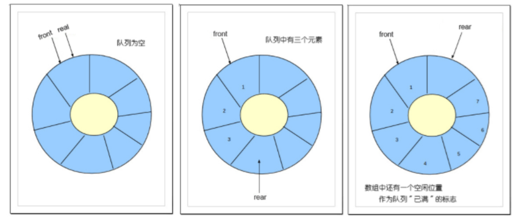

队列定义
队列（queue ）简称队，它同堆栈一样，也是一种运算受限的线性表，
其限制是仅允许在表的一端进行插入，而在表的另一端进行删除。
在队列中把插入数据元素的一端称为 队尾（rear） ），删除数据元素的一端称为 队首（front） ）。
向队尾插入元素称为 进队或入队，新元素入队后成为新的队尾元素；
从队列中删除元素称为 离队或出队，元素出队后，其后续元素成为新的队首元素。
由于队列的插入和删除操作分别在队尾和队首进行，每个元素必然按照进入的次序离队，
也就是说先进队的元素必然先离队，所以称队列为 先进先出表（First In First Out,简称FIFO）。

生活案例：排队打饭，排队进地铁站，上地铁
技术案例：多线程中就绪队列和阻塞队列
对于队列的主要操作是入队和出队操作
public interface Queue {
// 返回队列的大小
public int getSize();
// 判断队列是否为空
public boolean isEmpty();
// 数据元素 e 入队
public void enqueue(Object e);
// 队首元素出队
public Object dequeue();
// 取队首元素
public Object peek();
}
队列的存储结构
顺序队列
方法1：使用数组作为存储结构：
缺点：通过出队操作将数据弹出队列后，front之前的空间还能够再次得到吗？
不能。所以使用普通数组实现队列，就再也不能使用front之前的空间了，这会导致大量空间丢失
方法2：使用循环数组作为存储结构：
为了解决这个问题，将普通数组换成循环数组。在循环数组中，末尾元素的下一个元素不是数组外，而是数组的头元素。
这样就能够再次使用front之前的存储空间了

链式队列
队列的链式存储可以使用单链表来实现。
为了操作实现方便，这里采用带头结点的单链表结构。
根据单链表的特点，选择链表的头部作为队首，链表的尾部作为队尾。
除了链表头结点需要通过一个引用来指向之外，还需要一个对链表尾结点的引用，以方便队列的入队操作的实现。
为此一共设置两个指针，一个队首指针和一个队尾指针，如图 所示。
队首指针指向队首元素的前一个结点，即始终指向链表空的头结点，队尾指针指向队列当前队尾元素所在的结点。
当队列为空时，队首指针与队尾指针均指向空的头结点
双端队列deque double ended queue 通常读为“deck”
所谓双端队列是指两端都可以进行进队和出队操作的队列，如下图所示，将队列的两端分别称为前端和后端，两端都可以入队和出队。其元素的逻辑结构仍是线性结构
在双端队列进队时：前端进的元素排列在队列中后端进的元素的前面，后端进的元素排列在队列中前端进的元素的后面。在双端队列出队时，无论前端出还是后端出，先出的元素排列在后出的元素的前面。
输出受限的双端队列，即一个端点允许插入和删除，另一个端点只允许插入的双端队列。
输入受限的双端队列，即一个端点允许插入和删除，另一个端点只允许删除的双端队列。
双端队列既可以用来队列操作，也可以用来实现栈操作（只操作一端就是栈了）